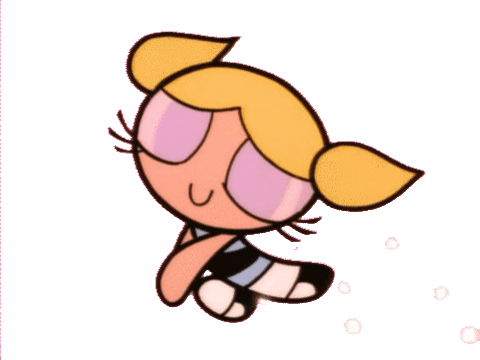

★,｡･:*:･ﾟ☆my websites☆ﾟ･:*:･｡,★
My First Website
my first website: this website was made after learning the basics of html. this website displays some of the many things i like for example
cartoon characters, songs, and books. it used to have more and the graph was completed until my code erased itself out of no where and i had to turn
that in for a project grade the first marking period of my sophomore year
New Orleans

this website was made to inform people about the beautiful city of New Orleans. our teacher wnated us to inform people
about popular cities while also using a dropdown menu in a navigation bar that was also stuck at the top or "sticky." i am also proud of this website because it
was my first time using a carousel which displayed a pictures in a mini slideshow. in this project i learned a lot about new orleans and its culture and history and also
the best places to eat and stay while visiting.
Astrology

this one is my favorite website that i have and i am really proud of. in this project we were told to add little animations in pictures or words.
this project was about something that we enjoy or our "passion." one of the things that i really enjoy learning about is horoscopes and astrology. its really interesting to me
that depending on what time and place you were born will affect you and your personality based on the position of the planets stars and sun. and i get more interested when things align
with how people act and when their personalities are alike to their zodiac sign
Favorite TV Show

this is another one of my most favorite websites. this website is about one of my favorite shows, the powerpuff girls
. in this website we were supposed to make another scrolling one pager about a favorite movie or show and i chose this show because
personally it is very nostalgic to me and i enjoy it a lot. while making this website i learned a lot about this show and about the creator and many other
shows that he has created. ive always been intrigued by the pretty visuals that this cartoon had and the cool characters. i grew up with the powerpuff
girls and it is one of my favorite shows ever.